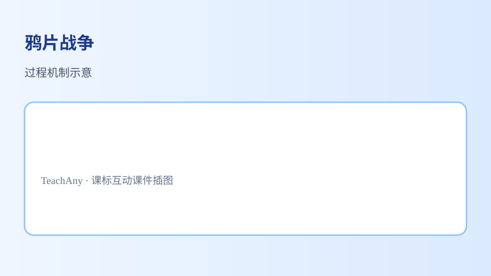

<!doctype html>
<html lang="zh-CN">
<head>
<meta charset="utf-8">
<meta name="viewport" content="width=device-width, initial-scale=1.0, viewport-fit=cover">
<title>鸦片战争 · 初中历史 G8 · TeachAny v7.20</title>
<meta name="description" content="初中历史：鸦片战争互动课件，对齐国家课程标准。">
<meta name="course-id" content="hist-m-opium-war">
<meta name="course-title" content="鸦片战争">
<meta name="course-subject" content="history">
<meta name="course-grade" content="middle-8">
<meta name="teachany-node" content="hist-m-opium-war">
<meta name="teachany-subject" content="history">
<meta name="teachany-grade" content="8">
<meta name="teachany-stage" content="middle">
<meta name="teachany-lesson-type" content="historical-inquiry">
<meta name="teachany-version" content="7.20.0">
<meta name="teachany-template-version" content="2.1">
<style>
*{box-sizing:border-box}html,body{margin:0}
body{background:#f8fafc;color:#1e293b;font-family:-apple-system,"PingFang SC",sans-serif;line-height:1.8}
.slide-container{height:100dvh;overflow-y:auto;scroll-snap-type:y proximity}
.slide-page{min-height:100dvh;display:flex;flex-direction:column;justify-content:center;align-items:center;padding:24px;scroll-snap-align:start}
.slide-inner{max-width:900px;width:100%;margin:0 auto}
.slide-page[data-page-type=cover]{text-align:center;background:radial-gradient(ellipse at 30% 20%,#cbd5e1,transparent 55%)}
.slide-page[data-page-type=cover] h1{font-size:clamp(26px,4.8vw,42px);color:#1e3a8a;margin:0 0 14px;font-weight:800}
.card{background:#fff;border:1px solid #cbd5e1;border-radius:14px;padding:24px;box-shadow:0 6px 24px rgba(30,58,138,.08)}
.card-accent{border-top:4px solid #f97316}.card-glow{box-shadow:0 6px 30px rgba(30,58,138,.18)}
.section-header{display:flex;align-items:center;gap:10px;margin-bottom:14px;flex-wrap:wrap}
.section-header h2{font-size:clamp(20px,3.6vw,24px);margin:0;color:#1e3a8a;font-weight:700}
.phase-tag{background:#dbeafe;color:#1d4ed8;border-radius:999px;padding:4px 12px;font-size:12px;font-weight:700}
.phase-tag[data-variant=success]{background:#dcfce7;color:#15803d}.phase-tag[data-variant=purple]{background:#ede9fe;color:#6d28d9}.phase-tag[data-variant=warn]{background:#fef3c7;color:#b45309}
.grid{display:grid;gap:10px}
.objectives{list-style:none;padding:0;margin:0;display:grid;gap:10px}
.objectives li{background:#f1f5f9;border:1px solid #cbd5e1;border-radius:12px;padding:12px 16px}
.choice{width:100%;text-align:left;border:1px solid #94a3b8;border-radius:12px;background:#f8fafc;color:#1e293b;padding:14px 18px;cursor:pointer;font-size:15px;min-height:44px}
.choice:hover{opacity:.92}.choice.correct{border-color:#22c55e;background:#dcfce7;color:#14532d}.choice.wrong{border-color:#ef4444;background:#fee2e2;color:#7f1d1d}
input,textarea{width:100%;border:1px solid #94a3b8;border-radius:10px;padding:12px;font-size:15px;background:#ffffff;color:#1e293b;min-height:44px}
.result{padding:14px 18px;border-radius:12px;background:#dcfce7;border:1px solid #bbf7d0;margin-top:10px;color:#14532d}
.result.warn{background:#fef3c7;border-color:#fde68a;color:#78350f}
.ta-standard-figure{margin:18px auto;max-width:640px}.ta-standard-figure img{width:100%;border-radius:12px;border:1px solid #cbd5e1}
.ta-standard-figure figcaption{text-align:center;color:#64748b;font-size:14px;margin-top:8px}
.summary-item{display:flex;gap:10px;padding:12px 16px;border:1px solid #cbd5e1;border-radius:12px;margin-bottom:8px}
.summary-item .num{font-weight:800;color:#f97316}
.subtitle{color:#1d4ed8;font-size:clamp(15px,2.8vw,18px);max-width:640px;margin:0 auto}
.canvas-wrap{overflow:auto;background:#f1f5f9;border:1px solid #cbd5e1;border-radius:12px;padding:12px;min-height:120px;text-align:center;color:#64748b}
.phet-wrap{position:relative;padding-top:62.5%;border-radius:12px;overflow:hidden;background:#f1f5f9;border:1px solid #cbd5e1}
.phet-wrap iframe{position:absolute;top:0;left:0;width:100%;height:100%;border:0}
.drag-pool,.drop-zone{display:flex;flex-wrap:wrap;gap:8px;min-height:56px;padding:10px;border:2px dashed #94a3b8;border-radius:12px;background:#f8fafc}
.drop-zone{border-style:solid;min-height:80px;flex-direction:column;align-items:stretch}
.drag-chip{display:inline-flex;align-items:center;gap:6px;padding:10px 14px;border-radius:10px;background:#e2e8f0;border:2px solid #94a3b8;cursor:grab;font-size:14px;touch-action:none;user-select:none;color:#1e293b}
.drag-chip.dragging{opacity:.55;cursor:grabbing}.drop-zone h4{margin:0 0 8px;font-size:14px;color:#1e3a8a}
.map-host{min-height:360px;border-radius:12px;overflow:hidden;border:1px solid #cbd5e1}
#knowledge-graph .section-title{font-size:clamp(20px,3.6vw,24px);margin:0 0 12px;color:#1e3a8a}
#knowledge-graph [data-teachany-kg]{min-height:180px}
</style>
<link rel="stylesheet" href="https://unpkg.com/leaflet@1.9.4/dist/leaflet.css">

  <link rel="stylesheet" href="/assets/scripts/ai-tutor.css">
  <link rel="stylesheet" href="/assets/scripts/teachany-tutor-card.css">
  <link rel="stylesheet" href="/assets/scripts/teachany-tts-narrator.css">
  <link rel="stylesheet" href="/assets/scripts/teachany-section-hints.css">
  <link rel="stylesheet" href="/assets/scripts/teachany-knowledge-graph.css">
  <link rel="stylesheet" href="/assets/scripts/teachany-audio-player.css">
  <link rel="stylesheet" href="/assets/scripts/teachany-floating-dock.css">
  <link rel="stylesheet" href="/assets/scripts/teachany-historical-map.css">
</head>
<nav class="teachany-page-nav" style="margin:12px auto;max-width:1080px;padding:8px 14px;display:flex;gap:14px;flex-wrap:wrap;font-size:14px;background:#f5f7fa;border-radius:10px;"><a href="#slide-container">📑 知识图谱</a><a href="#problem-anchor-choices">🤝 AI 学伴</a><a href="#learner-question-input">📚 课程内容</a></nav>

<body class="teachany-middle teachany-middle-pro">
<div class="slide-container" id="slide-container">
  <section data-conceptest="true" data-scaffold="full" data-bloom-level="remember" class="slide-page" data-page-type="cover" data-page-index="0" data-tts="hero" data-tsh="开场 - 鸦片战争">
    <div class="slide-inner"><div class="card card-glow"><h1>鸦片战争</h1><p class="subtitle">中国封建社会到1840年鸦片战争爆发后逐步解体。</p><figure class="ta-standard-figure" style="margin-top:28px"><figcaption>鸦片战争：概念—方法—应用</figcaption></figure></div></div>
  </section>
  <section data-conceptest="true" data-scaffold="partial" data-bloom-level="understand" class="slide-page" data-page-type="interactive" data-page-index="1" data-tts="problem-anchor" data-tsh="问题锚点">
    <div class="slide-inner"><div class="card card-accent"><div data-scaffold="full" data-bloom-level="remember" class="section-header"><span class="phase-tag">Problem Anchor</span><h2>今天你最想弄懂哪个问题？</h2></div><div class="grid" id="problem-anchor-choices">
          <button class="choice" data-anchor-choice="鸦片战争的核心概念是什么？">鸦片战争的核心概念是什么？</button>
          <button class="choice" data-anchor-choice="怎样用课标要求的方法学习鸦片战争？">怎样用课标要求的方法学习鸦片战争？</button>
          <button class="choice" data-anchor-choice="鸦片战争在考试或生活中如何应用？">鸦片战争在考试或生活中如何应用？</button>
          <button class="choice" data-anchor-choice="学习鸦片战争时我最容易错在哪里？">学习鸦片战争时我最容易错在哪里？</button>
      </div><label style="display:block;margin-top:16px;color:#64748b;font-size:14px">或者写下你自己的问题<input id="learner-question-input" placeholder="把你的疑问写在这里"></label><p id="anchor-feedback" class="result warn" style="margin-top:14px">选择或输入后，这节课会围绕你的问题展开。</p></div></div>
  </section>
  <section data-scaffold="partial" data-bloom-level="apply" class="slide-page" data-page-type="objectives" data-page-index="2" data-tts="objectives" data-tsh="学习目标">
    <div class="slide-inner"><div class="card"><div data-bloom-level="understand" class="section-header"><span class="phase-tag" data-variant="success">Objectives</span><h2>学习目标</h2></div><ul class="objectives">
          <li data-bloom-level="1">能复述课标要点：中国封建社会到1840年鸦片战争爆发后逐步解体。</li>
          <li data-bloom-level="2">能运用所学方法分析鸦片战争相关典型问题</li>
          <li data-bloom-level="3">能在情境中正确应用鸦片战争的知识与技能</li>
          <li data-bloom-level="4">能识别并纠正关于鸦片战争的常见误区</li>
      </ul></div></div>
  </section>
  <section class="slide-page" data-page-type="quiz" data-page-index="3" data-tts="pretest" data-tsh="前测" id="pre-test" data-bloom-level="1" data-scaffold="full" data-conceptest="true">
    <div class="slide-inner"><div class="card card-accent"><div data-bloom-level="apply" class="section-header"><span class="phase-tag" data-variant="warn">Pretest</span><h2>课前小诊断</h2></div><p style="margin:0 0 14px">学习「鸦片战争」时，第一步最应该做什么？</p><div class="grid" id="pre-choices">
        <button class="choice" data-correct="0">明确课标要求，建立概念框架再练习</button>
        <button class="choice">直接刷题，不用理解概念</button>
        <button class="choice">只背结论，不做情境分析</button>
      </div><p id="pre-fb" class="result warn" style="margin-top:14px">先选一个，错了正好暴露你的前概念，我们一起纠正。</p></div></div>
  </section>
  <section class="slide-page" data-page-type="concept" data-page-index="4" data-tts="concept-core" data-tsh="核心 - 鸦片战争" data-bloom-level="2" data-scaffold="full">
    <div class="slide-inner"><div class="card card-accent"><div class="section-header"><span class="phase-tag">Concept</span><h2>鸦片战争：课标核心是什么？</h2></div><p><strong>鸦片战争</strong>是初中历史的重要内容。中国封建社会到1840年鸦片战争爆发后逐步解体。</p><p>通过明末李自成起义，清中叶以来的政治腐败、故步自封和19世纪的国际局势，认识当时中国社会面临的严重危机。</p><figure class="ta-standard-figure"><figcaption>鸦片战争核心概念示意</figcaption></figure></div></div>
  </section>
  <section class="slide-page" data-page-type="concept" data-page-index="5" data-tts="example-apply" data-tsh="应用 - 鸦片战争" data-bloom-level="3" data-scaffold="partial">
    <div class="slide-inner"><div class="card"><div class="section-header"><span class="phase-tag">Examples</span><h2>怎样学好鸦片战争？</h2></div><p>学习路径：<strong>明确概念</strong>→<strong>掌握方法</strong>→<strong>情境练习</strong>→<strong>反思纠错</strong>。</p><p>trade were most similar to the arguments made in the early
nineteenth century by supporters of the continued use of
(A) artisanal and craft production, as opposed to the factory system
(B) mercantilist trade practices, as opposed to free trade
(C) African slave labor on sugar plantations in the Americas
(D) women’s and children’s labor in the production of luxury goods in
Chinese households
AP World History: Modern Course and Exam Description ExamInformation V.1 | 207
Return to Table of Content</p><figure class="ta-standard-figure"><figcaption>鸦片战争方法与应用</figcaption></figure></div></div>
  </section>
  <section class="slide-page" data-page-type="interactive" data-page-index="6" data-tts="map-explore" data-tsh="地图探究" data-bloom-level="3" data-scaffold="partial">
    <div class="slide-inner"><div class="card card-glow"><div class="section-header"><span class="phase-tag" data-variant="success">Map</span><h2>鸦片战争 · 历史地图</h2></div><p style="margin:0 0 12px;color:inherit;opacity:.85">点击时代/图层按钮切换地图；悬停边界，点击城市标记查看说明。</p><div class="map-host" data-teachany-map="thm-hist-m-opium-war" data-teachany-map-scope="china" data-teachany-map-title="鸦片战争 · 历史地图"><script type="application/json" data-teachany-map-config>
{
  "eras": [
    {
      "id": "era",
      "label": "清代",
      "file": "chrono-cn/019-qing-dynasty.geojson",
      "fill": "#64748b",
      "stroke": "#64748b",
      "desc": "<strong>清代</strong>：鸦片战争相关史实地图。",
      "cities": []
    }
  ],
  "center": [
    34,
    108
  ],
  "zoom": 4,
  "fitBounds": [
    [
      18,
      72
    ],
    [
      52,
      140
    ]
  ],
  "minZoom": 2,
  "maxZoom": 8,
  "overlays": [
    {
      "id": "capitals",
      "label": "古都",
      "file": "details/capitals-extended.geojson",
      "style": {
        "color": "#a855f7",
        "radius": 4
      },
      "visible": false
    }
  ],
  "terrain": true
}
</script></div></div></div>
  </section>
  <section class="slide-page" data-page-type="interactive" data-page-index="7" data-tts="drag-activity" data-tsh="互动 - 概念归类" data-bloom-level="3" data-scaffold="partial">
    <div class="slide-inner"><div class="card card-glow"><div class="section-header"><span class="phase-tag" data-variant="success">Interactive</span><h2>分一分：鸦片战争学习要素归类</h2></div><p style="margin:0 0 12px">把卡片拖到<strong>核心概念 / 方法技能 / 应用情境 / 常见误区</strong>。</p><div class="drag-pool" id="drag-pool" aria-label="待拖动项">
        <span class="drag-chip" draggable="true" data-zone="core">📜 明确史实与时间</span>
        <span class="drag-chip" draggable="true" data-zone="method">🔗 分析因果与影响</span>
        <span class="drag-chip" draggable="true" data-zone="apply">🏛️ 联系史料得出结论</span>
        <span class="drag-chip" draggable="true" data-zone="miscon">⚠️ 以今律古或空泛议论</span>
      </div><div class="grid" style="grid-template-columns:repeat(auto-fit,minmax(160px,1fr));gap:10px;margin-top:14px">
        <div class="drop-zone" data-accept="core"><h4>核心概念</h4></div>
        <div class="drop-zone" data-accept="method"><h4>方法/技能</h4></div>
        <div class="drop-zone" data-accept="apply"><h4>应用情境</h4></div>
        <div class="drop-zone" data-accept="miscon"><h4>常见误区</h4></div>
      </div><p id="drag-readout" class="result warn" style="margin-top:12px">拖完 4 项后自动判分。</p></div></div>
  </section>
  <section class="slide-page" data-page-type="quiz" data-page-index="8" data-tts="practice" data-tsh="练习" data-bloom-level="4" data-scaffold="none">
    <div class="slide-inner"><div class="card card-accent"><div class="section-header"><span class="phase-tag" data-variant="purple">Practice</span><h2>用鸦片战争知识解决问题</h2></div><p style="margin:0 0 10px"><strong>解释题：</strong>请结合课标要点，用2–3句话解释你如何理解「鸦片战争」，并举一个应用例子。</p><textarea id="explain" placeholder="我的理解：……例如：……"></textarea><button class="choice" id="show-fb" style="margin-top:10px">看看老师的提示</button><p id="practice-fb" class="result" style="margin-top:12px;display:none">提示：先写核心概念，再写方法或步骤，最后举一个具体情境例子。</p><p style="margin:14px 0 6px"><strong>拓展题：</strong>关于鸦片战争，你曾犯过什么错误？后来怎样改正？</p><textarea id="design" placeholder="错误：……改正：……"></textarea></div></div>
  </section>
  <section class="slide-page" data-page-type="quiz" data-page-index="9" data-tts="posttest" data-tsh="后测" id="post-test" data-bloom-level="3" data-scaffold="none" data-conceptest="true">
    <div class="slide-inner"><div class="card"><div class="section-header"><span class="phase-tag" data-variant="warn">Posttest</span><h2>达标检测</h2></div><p style="margin:0 0 12px">关于鸦片战争的学习，哪种做法最科学？</p><div class="grid" id="post-choices">
        <button class="choice" data-correct="0">理解课标概念，掌握方法，在情境中练习并反思</button>
        <button class="choice">只背答案，不做分析</button>
        <button class="choice">忽略课标，凭感觉答题</button>
      </div><p id="post-fb" class="result" style="margin-top:12px">选一个并查看反馈。</p></div></div>
  </section>
  <section class="slide-page" data-page-type="concept" data-page-index="10" data-tts="knowledge-graph" data-tsh="知识图谱" data-bloom-level="2" data-scaffold="full">
    <div class="slide-inner"><div class="card card-glow"></div></div>
  </section>
  <section class="slide-page" data-page-type="summary" data-page-index="11" data-tts="summary" data-tsh="总结迁移" data-bloom-level="2" data-scaffold="full">
    <div class="slide-inner"><div class="card card-glow"><div class="section-header"><span class="phase-tag" data-variant="success">Summary</span><h2>这节课我们学会了</h2></div>
      <div class="summary-item"><span class="num">1</span><div>明确了鸦片战争的课标核心要求。</div></div>
      <div class="summary-item"><span class="num">2</span><div>掌握了学习鸦片战争的基本路径：概念—方法—应用。</div></div>
      <div class="summary-item"><span class="num">3</span><div>能识别常见误区并主动纠错。</div></div>
<p style="margin-top:16px"><strong>迁移任务：</strong>找一道与「鸦片战争」相关的练习题或生活情境，用本课方法完整解答一遍。</p></div></div>
  </section>
</div>
<script>
(function(){
  function wire(group, fbId, okMsg, badMsg){
    var box=document.getElementById(group); if(!box) return;
    box.querySelectorAll('.choice').forEach(function(b){
      b.addEventListener('click',function(){
        box.querySelectorAll('.choice').forEach(function(x){x.classList.remove('correct','wrong')});
        var ok=b.hasAttribute('data-correct'); b.classList.add(ok?'correct':'wrong');
        var fb=document.getElementById(fbId); if(fb){fb.textContent=ok?okMsg:badMsg; fb.className='result'+(ok?'':' warn')}
      });
    });
  }
  wire('pre-choices','pre-fb',"对了！先建立概念与方法框架，再练习巩固。","应先理解课标要求与核心概念，再练习与应用。");
  wire('post-choices','post-fb',"正确！概念+方法+情境练习是高效学习路径。","应回到课标概念与方法，结合情境练习。");
  var sf=document.getElementById('show-fb'),pf=document.getElementById('practice-fb');
  if(sf&&pf) sf.addEventListener('click',function(){pf.style.display='block'});

  var pool=document.getElementById('drag-pool'), dragOut=document.getElementById('drag-readout');
  var placed=0, total=4;
  function scoreDrag(){
    if(placed<total) return;
    var wrong=document.querySelectorAll('.drop-zone .drag-chip.wrong').length;
    if(!dragOut) return;
    if(wrong===0){dragOut.textContent="分类正确！学习鸦片战争要概念、方法、应用三位一体，并警惕常见误区。"; dragOut.className='result'}
    else{dragOut.textContent="再想想：前三项分别对应概念理解、方法运用、情境应用；最后一项是误区。"; dragOut.className='result warn'}
  }
  document.querySelectorAll('.drag-chip[draggable]').forEach(function(chip){
    chip.addEventListener('dragstart',function(e){e.dataTransfer.setData('text/plain',chip.getAttribute('data-zone')); chip.classList.add('dragging')});
    chip.addEventListener('dragend',function(){chip.classList.remove('dragging')});
    chip.addEventListener('click',function(){document.querySelectorAll('.drag-chip').forEach(function(c){c.classList.remove('selected')}); chip.classList.add('selected'); window._selectedChip=chip});
  });
  document.querySelectorAll('.drop-zone').forEach(function(zone){
    zone.addEventListener('dragover',function(e){e.preventDefault(); zone.style.opacity='0.85'});
    zone.addEventListener('dragleave',function(){zone.style.opacity=''});
    zone.addEventListener('drop',function(e){
      e.preventDefault(); zone.style.opacity='';
      var type=e.dataTransfer.getData('text/plain');
      var chip=document.querySelector('.drag-chip.dragging')||document.querySelector('.drag-chip[data-zone="'+type+'"]:not(.placed)');
      if(!chip||chip.parentElement===zone) return;
      if(chip.parentElement.classList.contains('drop-zone')) placed--;
      zone.appendChild(chip); chip.classList.add('placed');
      chip.classList.toggle('wrong', type!==zone.getAttribute('data-accept'));
      chip.classList.toggle('correct', type===zone.getAttribute('data-accept'));
      if(chip.parentElement===zone && !chip.dataset.counted){placed++; chip.dataset.counted='1'}
      scoreDrag();
    });
    zone.addEventListener('click',function(){
      if(!window._selectedChip) return;
      var chip=window._selectedChip, type=chip.getAttribute('data-zone');
      if(chip.parentElement.classList.contains('drop-zone')) placed--;
      zone.appendChild(chip); chip.classList.add('placed');
      chip.classList.toggle('wrong', type!==zone.getAttribute('data-accept'));
      chip.classList.toggle('correct', type===zone.getAttribute('data-accept'));
      if(chip.parentElement===zone && !chip.dataset.counted){placed++; chip.dataset.counted='1'}
      window._selectedChip=null; document.querySelectorAll('.drag-chip').forEach(function(c){c.classList.remove('selected')});
      scoreDrag();
    });
  });
  window.__TEACHANY_LEARNER_QUESTION__='';
  document.querySelectorAll('[data-anchor-choice]').forEach(function(b){
    b.addEventListener('click',function(){
      document.querySelectorAll('[data-anchor-choice]').forEach(function(x){x.classList.remove('correct')});
      b.classList.add('correct');
      window.__TEACHANY_LEARNER_QUESTION__=b.getAttribute('data-anchor-choice');
      var fb=document.getElementById('anchor-feedback'); if(fb) fb.textContent='你的问题：'+window.__TEACHANY_LEARNER_QUESTION__;
    });
  });
  var inp=document.getElementById('learner-question-input');
  if(inp) inp.addEventListener('input',function(e){window.__TEACHANY_LEARNER_QUESTION__=e.target.value});
})();
</script>

<script src="/assets/scripts/ai-tutor.js"></script>
<script src="/assets/scripts/teachany-tutor-card.js" defer></script>
<script src="/assets/scripts/teachany-tts-narrator.js" defer></script>
<script src="/assets/scripts/teachany-section-hints.js" defer></script>
<script src="/assets/scripts/teachany-knowledge-graph.js" defer></script>
<script src="/assets/scripts/teachany-audio-player.js" defer></script>

<!-- v7.7 标准 AI 学伴入口卡片 -->


<script>
/* v7.20 标准 AI 学伴配置（apply-standard-modules 自动补齐） */
window.__TEACHANY_TUTOR_CONFIG__ = window.__TEACHANY_TUTOR_CONFIG__ || {
  courseId: "hist-m-opium-war",
  courseTitle: "鸦片战争",
  subject: "history",
  grade: "8",
  nodeId: "hist-m-opium-war",
  lessonType: "historical-inquiry",
  getLearnerQuestion: function () { return window.__TEACHANY_LEARNER_QUESTION__ || ''; },
  getContext: function () { return (document.body && document.body.innerText || '').slice(0, 3000); }
};
</script>

<!-- v7.20 标准连续音频配置（apply-standard-modules 自动补齐） -->
<div id="audio-config" data-teachany-audio hidden>
  <script type="application/json" data-teachany-audio-playlist>
[
  {
    "id": "s01-hero",
    "section": "hero",
    "src": "./tts/s01-hero.mp3",
    "label": "开场"
  },
  {
    "id": "s02-problem-anchor",
    "section": "problem-anchor",
    "src": "./tts/s02-problem-anchor.mp3",
    "label": "问题锚点"
  },
  {
    "id": "s03-objectives",
    "section": "objectives",
    "src": "./tts/s03-objectives.mp3",
    "label": "学习目标"
  },
  {
    "id": "s04-pretest",
    "section": "pretest",
    "src": "./tts/s04-pretest.mp3",
    "label": "前测"
  },
  {
    "id": "s05-concept-core",
    "section": "concept-core",
    "src": "./tts/s05-concept-core.mp3",
    "label": "核心"
  },
  {
    "id": "s06-example-apply",
    "section": "example-apply",
    "src": "./tts/s06-example-apply.mp3",
    "label": "应用"
  },
  {
    "id": "s07-drag-activity",
    "section": "drag-activity",
    "src": "./tts/s07-drag-activity.mp3",
    "label": "互动"
  },
  {
    "id": "s08-practice",
    "section": "practice",
    "src": "./tts/s08-practice.mp3",
    "label": "练习"
  },
  {
    "id": "s09-posttest",
    "section": "posttest",
    "src": "./tts/s09-posttest.mp3",
    "label": "后测"
  },
  {
    "id": "s10-summary",
    "section": "summary",
    "src": "./tts/s10-summary.mp3",
    "label": "总结迁移"
  }
]
  </script>
</div>
<script src="https://unpkg.com/leaflet@1.9.4/dist/leaflet.js"></script>
<script src="/assets/scripts/teachany-historical-map.js" defer></script>
<!-- ⭐ v7.7 标准 AI 学伴入口卡片（必须显式存在，不能仅依赖 FAB） -->
<section class="ta-standard-section" id="teachany-ai-tutor-card">
  <div data-teachany-tutor-card></div>
</section>

<!-- teachany-enhanced -->
<section class="section" data-bloom-level="remember" data-scaffold="full"><h2>鸦片战争的背景</h2><p style="line-height:1.9;">鸦片战争爆发于1840年，是清朝与英国之间的一场重要冲突。这场战争的背景复杂，涉及经济、政治和文化等多个方面。首先，英国在工业革命后生产力大幅提升，急需开拓海外市场。中国自给自足的自然经济和闭关锁国的政策限制了英国商品的销售。其次，英国通过向中国大量走私鸦片来平衡贸易逆差，导致中国白银外流，社会问题加剧。例如，1839年林则徐在虎门销烟，销毁了大量鸦片，成为战争的导火索。这一事件反映了清政府对鸦片危害的坚决态度，但也激化了中英矛盾。</p></section>
<section class="section" data-bloom-level="understand" data-scaffold="partial"><h2>鸦片战争的直接原因</h2><p style="line-height:1.9;">鸦片战争的直接原因是英国的鸦片贸易和中国政府的禁烟政策。英国东印度公司通过印度殖民地大量生产鸦片，并走私到中国。鸦片不仅毒害了中国人的身体健康，还导致白银大量外流，严重影响了中国的经济。1839年，林则徐被任命为钦差大臣，前往广东禁烟。他在虎门海滩当众销毁了约2万箱鸦片，这一行动得到了道光皇帝的支持。然而，英国政府认为这是对其贸易利益的侵犯，决定对中国发动战争。例如，英国外交大臣帕默斯顿在议会演讲中宣称，中国的禁烟行动是对英国商人的不公正对待，必须用武力解决。</p></section>
<section class="section" data-bloom-level="apply" data-scaffold="full"><h2>鸦片战争的经过</h2><p style="line-height:1.9;">鸦片战争分为两个阶段。第一阶段从1840年6月到1841年1月，英国舰队进攻广东、厦门等地，但由于林则徐的严密防守，英军未能得逞。随后英军北上，攻占定海，直逼天津。清政府被迫妥协，撤换林则徐，派琦善与英军谈判。第二阶段从1841年8月到1842年8月，英军再次进攻，先后攻占厦门、宁波、上海等地，最终兵临南京城下。清政府被迫签订《南京条约》。例如，在镇江战役中，英军凭借先进的武器和战术，轻松击败了清军，展示了中英军事力量的巨大差距。</p></section>
<section class="section" data-bloom-level="analyze" data-scaffold="partial"><h2>《南京条约》的内容</h2><p style="line-height:1.9;">《南京条约》是中国近代史上第一个不平等条约，签订于1842年8月29日。条约主要内容包括：割让香港岛给英国；开放广州、厦门、福州、宁波、上海五处为通商口岸；赔偿英国2100万银元；英国商人可以自由与中国商人贸易，不受公行限制；中英两国官员平等往来。这些条款严重损害了中国的主权和利益。例如，香港岛的割让使英国在东亚获得了重要的军事和贸易基地，而五口通商则打开了中国的门户，为西方列强的进一步侵略铺平了道路。</p></section>
<section class="section" data-bloom-level="evaluate" data-scaffold="full"><h2>鸦片战争的影响</h2><p style="line-height:1.9;">鸦片战争对中国产生了深远的影响。首先，中国的领土完整遭到破坏，香港岛被割让。其次，中国的经济受到冲击，大量外国商品涌入，冲击了传统手工业。第三，中国的社会结构发生变化，沿海地区的商业和贸易活动日益活跃。第四，中国的国际地位下降，开始沦为半殖民地半封建社会。例如，战后中国的关税自主权丧失，外国商品以极低的关税进入中国市场，导致本土产业难以竞争。此外，鸦片战争还激发了中国人民的民族意识，为后来的太平天国运动和洋务运动埋下了伏笔。</p></section>
<section class="section" data-bloom-level="create" data-scaffold="partial"><h2>鸦片战争中的关键人物</h2><p style="line-height:1.9;">鸦片战争中有几位关键人物对战争的进程和结果产生了重要影响。林则徐是禁烟运动的领导者，他的坚决态度和有效措施暂时遏制了鸦片的泛滥。道光皇帝是清朝的最高统治者，他在战争初期支持禁烟，但在英军的压力下最终妥协。琦善是清政府的谈判代表，他在与英军的谈判中表现软弱，导致中国利益受损。英国方面的关键人物包括外交大臣帕默斯顿和海军将领义律，他们推动了战争的爆发和进行。例如，义律在战争中指挥英军多次击败清军，为英国争取了有利的谈判条件。</p></section>
<section class="section" data-bloom-level="remember" data-scaffold="full"><h2>鸦片战争中的军事对比</h2><p style="line-height:1.9;">鸦片战争中，中英两国的军事力量对比悬殊。英国拥有先进的武器装备和强大的海军，其战舰装备了蒸汽机和重型火炮，机动性和火力都远超清军。清军则主要依靠传统的冷兵器和落后的火炮，海军力量几乎可以忽略不计。例如，在虎门战役中，英军的战舰轻松突破了清军的防线，而清军的火炮射程和精度都无法与英军相比。此外，英军的战术和组织也更为先进，士兵训练有素，指挥系统高效。清军则缺乏统一的指挥和协调，各部队之间配合不力，导致战斗效率低下。</p></section>
<section class="section" data-bloom-level="understand" data-scaffold="partial"><h2>鸦片战争的历史意义</h2><p style="line-height:1.9;">鸦片战争是中国近代史的开端，标志着中国从封建社会向半殖民地半封建社会的转变。这场战争暴露了清政府的腐败和无能，也揭示了中西方的巨大差距。鸦片战争后，中国开始被动地接受西方的文化和科技，逐渐走上了现代化的道路。例如，洋务运动就是在鸦片战争的刺激下兴起的，旨在通过学习西方的技术来增强国力。此外，鸦片战争也激发了中国人民的民族意识，为后来的革命运动奠定了基础。从更广泛的角度看，鸦片战争是西方列强全球扩张的一部分，反映了19世纪帝国主义对亚洲的侵略和掠夺。</p></section>
<section class="section" data-bloom-level="apply" data-scaffold="full"><h2>林则徐虎门销烟</h2><p style="line-height:1.9;">1839年，林则徐作为钦差大臣赴广东禁烟。他采取强硬措施，要求外国商人交出鸦片，并在虎门海滩当众销毁。这次行动共销毁鸦片237万斤，历时23天。林则徐还组织编写《四洲志》，介绍世界各国情况。这就像今天海关查获毒品后公开销毁一样，展现了政府禁毒的决心。但英国以此为借口，发动了鸦片战争。</p></section>
<section class="section" data-bloom-level="analyze" data-scaffold="partial"><h2>《南京条约》的影响</h2><p style="line-height:1.9;">1842年签订的中英《南京条约》是中国近代第一个不平等条约。条约规定：割让香港岛给英国；赔款2100万银元；开放广州、厦门、福州、宁波、上海五处为通商口岸。这就像被迫签下不公平合同，严重损害了中国主权。例如，关税自主权丧失后，英国商品大量涌入，冲击了中国传统手工业，就像今天低价进口商品冲击本土产业一样。条约还开创了外国人在华不受中国法律管束的'领事裁判权'制度。</p></section>
<section class="section" data-bloom-level="remember" data-scaffold="none"><h2>📋 课前诊断</h2><p style="line-height:1.9;">1. 鸦片战争的直接原因是什么？2. 林则徐在鸦片战争中扮演了什么角色？</p></section>
<section class="section" data-bloom-level="evaluate" data-scaffold="none"><h2>✅ 达标检测</h2><p style="line-height:1.9;">1. 《南京条约》的主要内容有哪些？2. 鸦片战争对中国的影响是什么？</p></section>
<section class="section" data-bloom-level="analyze" data-scaffold="partial" data-conceptest="true"><h2>💡 错因诊断</h2><p style="line-height:1.9;">错因：学生可能误以为鸦片战争只是因为鸦片问题而爆发。误区：实际上，鸦片战争的根本原因是中英之间的经济和政治矛盾。诊断：需要引导学生理解战争的复杂背景和多方面原因。</p></section>
<section class="section" data-bloom-level="create" data-scaffold="partial"><h2>🚀 迁移挑战</h2><p style="line-height:1.9;">迁移挑战：设计一个表格，对比鸦片战争中中英两国的军事力量，并分析其对战争结果的影响。</p></section>
<!-- v7.7.4 标准知识图谱模块 -->
<section class="section" id="knowledge-graph" style="max-width:1080px;margin:24px auto;padding:0 20px;">
  <h2 class="section-title">🗺️ 知识图谱：鸦片战争 — 鸦片战争</h2>
  <div data-teachany-kg="hist-m-opium-war">
    <canvas class="tkg-fallback-canvas" width="720" height="120" aria-label="知识图谱互动画布" style="display:block;width:100%;max-height:140px;border-radius:12px;"></canvas>
  </div>
</section>
<script>const knowledgeGraphData={"prerequisites": [], "current": {"id": "hist-m-opium-war", "name": "鸦片战争", "status": "active"}, "extends": []};
// auto-injected standard graph data</script>
</body>
</html>
